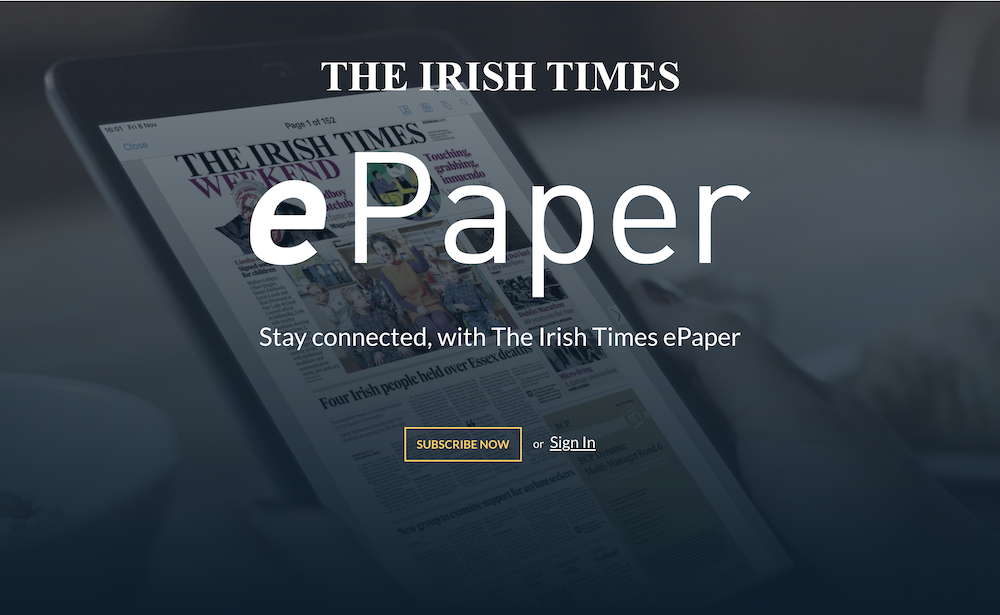
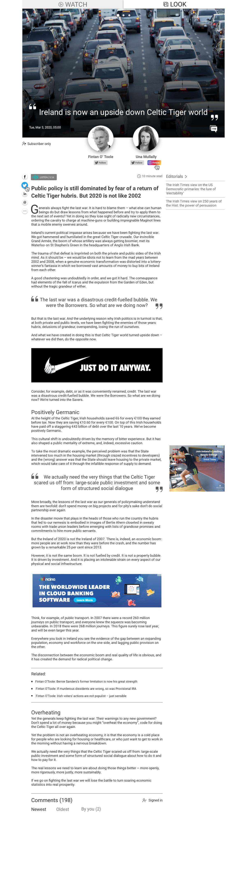

About the Project
What if we empowered our readers to go about their day and still get their favourite
Irish Times content? What if they could listen to the articles instead of having to sit down to read them?
That would allow them to go about their day and still get the news they want.
Thus, an idea was born. An idea that would bring myself and the UX team at The Irish Times on a year long journey
of designing, testing, and implementing.
My Role
I lead the initial descovery process while mentoring a junior designer, analysed test results,
contributed to brandingand logo ideas, and designed prototypes.
The Process
Discovery
We started with "The realm of possibilities": Writing down ideas on a board of what this product could be.
No idea too outlandish or over the top! We then divided the ideas and possibilities into what we thought
was achievable as an MVP, and what would be a "nice to have" to potentially develop in the future.
Once the potential MVP requirements where defined, we involved the rest of the team for an information grouping session:
Using postits, each of us placed words they associated with each requirement onto the corresponding board. From this session, the MVP requirements where refined, and development work could start!
Branding
Myself and the rest of the team brainstormed names for the new feature:
These names where then tested amongst collegues and users to find the ideal one: The testing procedure involved
showing one of the names to the person, with no context. The person was then asked what this word inspired in them. A control group was then set up, and
asked to react to each word in the same way, but this time some marketing concepts where shown alongside the word.
Eventually, Listen was chosen as the name for the new feature, and the whole team started working on Marketing and logo concepts.

Data Flow and Prototyping
I created a data flow based on the MVP requirements, and gave it to the Dev team to start implementation. Based on the same data model, myself and the rest of the UX team started working on
wireframes and user flows.
Testing
With the help of the analytics team, the first round of testing was organised: 5 subscribers where put in a room,
individually, with a test device containing an interactive high-fi prototype of Listen and an interviewer. the process was recorded
through LookBack (both screen interactions of the device and camera view of the user's face) and an external camera
Recording the interaction between interviewer and user. The interviewer had a set of questions that was standardized
for all test users.
This process was iterated three times, and eventually an optimal user journey and interface where derived from the analysis of the test data collected.
Launch
The testing highlighted a few user expectations that where not defined as MVP requirements:
Specifically, the ability to navigate away from the article being listened to, and the ability to
queue audio articles the user might be interetsed in. These requirements where built into the optimised data
structure and user journey, however the dev team cited insufficient time to implement these features in the given timeframe for MVP.
Eventually, Listen was launched alongside a static mini-website, designed and developed by me, to great success and subscriber response.
Final product

While some of the more advanced features still haven't been implemented, such as the queue system,
or the ability to navigate away from the article being listened to without interrupting the audio, or search system on the hub,
Listen is now one of the most popular features at the Irish Times, and has contributed to significant Subscriber acquisition and retention.
What I Learnt
My experience with The Irish Times has been long, positive, and varied. From user research, to
re-designs and improvements, to front-end development,
to bringing both internal and customer-facing products from mere ideas to full deployment, to
mentoring interns.
Thanks to these experiences, I have aquired many soft and hard skills, especially in the areas of
teamwork, front-end development, and mentoring.
Back